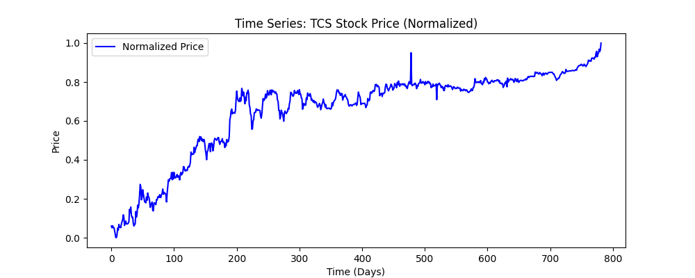
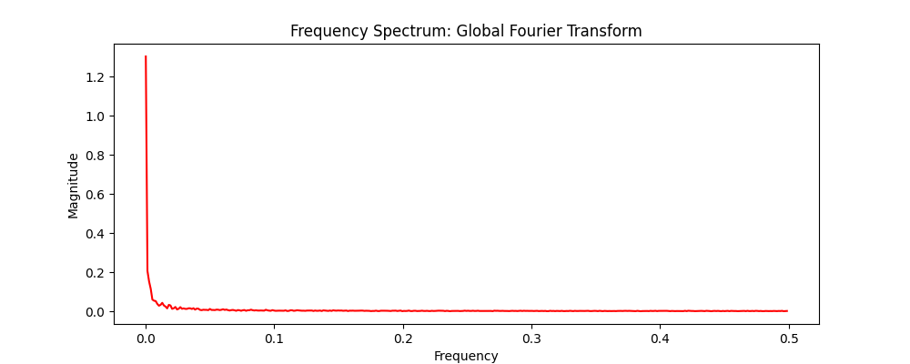
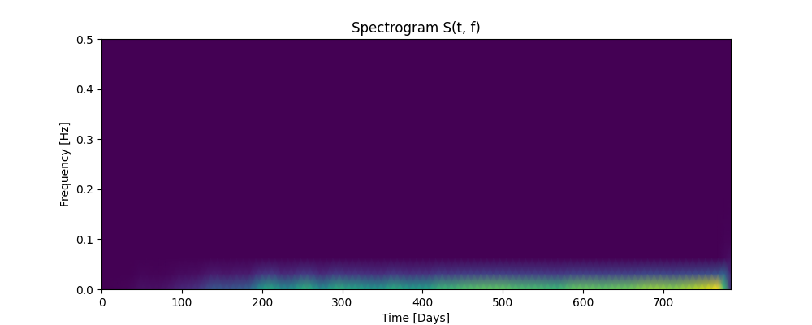

This research project treats financial time series data (TCS Stock) as non-stationary signals. By applying Short-Time Fourier Transforms (STFT), we extract time-frequency features (spectrograms) which are then processed by a 2D Convolutional Neural Network (CNN).
This captures cyclic market behaviors and localized volatility spikes that traditional 1D LSTM models often overlook.
| Domain | Transformation Type | Resulting Visualization |
|---|---|---|
| Time | $x[n]$ Normalized Price |  |
| Frequency | Global Fourier Transform (FFT) |  |
| Time-Frequency | STFT Spectrogram $S(t, f)$ |  |
# 1. Environment Setup
git clone https://github.com/ha7-piixel/FinanceTimeSeriesForecast.git
pip install -r Requirements.txt
# 2. Execute Data & Training Pipeline
python3 src/generate_plots.py
python3 src/train.py
# 3. Final Report Compilation
cd results && pdflatex report.tex